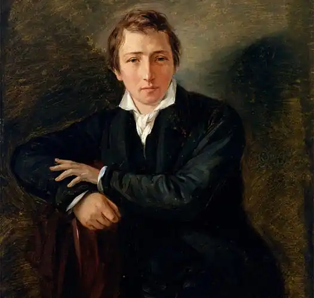
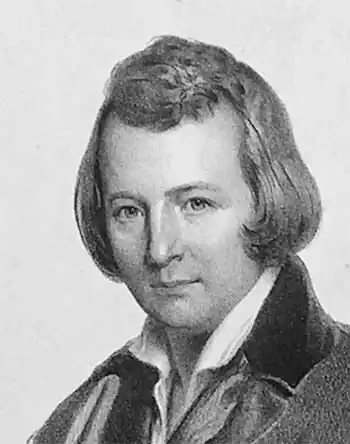

ГЕНРІХ ГЕЙНЕ
(1797-1856)
Німецький поет, прозаїк, есеїст Генріх Гейне народився в родині єврейського торговця Самсона Гейне й Бетті ван Гельдерн у місті Дюссельдорфі, на Рейні. Рейнська область була економічно більш розвиненою, ніж інші. Тут уже 1805року з приходом французьких військ були скасовані феодальні повинності й введене більш прогресивне законодавство. Отож, з раннього віку Гейне мав змогу бачити не лише феодальну відсталість країни, але й паростки нової Німеччини. З 1810 по 1812 рік Генріх навчався у Дюссельдорфському ліцеї. Наступний рік провів у конторі багатого банкіра у Франкфурті-на-Майні. У 1816 році Генріх продовжив заняття комерцією у Гамбурзі у торговій фірмі дядька — мільйонера Соломона Гейне. Перший літературний виступ Гейне належить до 1817 року, коли в журналі "Гамбурзький страж" були надруковані його перші вірші. Юнацька лірика Гейне була відгуком на перше нерозділене кохання до кузини Амалії. На кошти дядька юнак вступив до Боннського університету (1819), звідки потім переїхав до Геттінгензького університету (1820), але змушений був полишити його у зв'язку з дуеллю. Він вивчав юридичні науки, філософію, літературу. У 1821 році вступив в Берлінський університет, де слухав лекції філософа Гегеля, одного з найосвіченіших людей свого часу. Пізніше Гейне виступив з глибоким аналізом німецьких філософських систем. У грудні 1824 році Генріх повертається до Геттінгензького університету. У цьому ж році його приймають у будинку Гете у Веймарі. У 1825 році Гейне захистив у Геттінгензькому університеті дисертацію на ступінь доктора права, а напередодні прийняв лютеранство. Потім він багато подорожує, відвідуючи Англію, Італію. Враження від цих поїздок відбились у його дорожніх нарисах. Під час літнього відпочинку Гейне прочитав у газетах про Липневу революцію. Це підштовхнуло його до рішення поїхати до Франції. Гейне прибув до Парижа 14 травня 1831 року. Все подальше життя пройшло в столиці Франції. До Німеччини він боявся повертатися, адже йому загрожував арешт за гострі політичні твори. Упродовж життя Гейне побував у Німеччині два рази, щоб навідати матір і улаштувати діла з видавцем (1844). У подальшому поїздки до Німеччини були неможливими за станом здоров'я: у поета був параліч спинного мозку. У травні 1848 року він востаннє вийшов з дому, щоб відвідати Лувр. Решту років він був прикутий до ліжка. Проживаючи в Парижі, Генріх Гейне зустрічався з багатьма видатними людьми: Оноре де Бальзаком, Жорж Санд, Гансом Крістіаном Андерсеном, Ріхардом Вагнером, Фердинанадом Лассалем і Карлом Марксом. Ліричні вірші раннього періоду творчості Гейне склали цілу книгу "Книга пісень" (1827). Ця поетична збірка принесла йому визнання у Німеччині, а згодом і в усьому світі. За життя автора вона видавалась 13 разів; багато віршів були покладені на музику Р. Шуманом, Ф. Шубертом, Й. Брамсом, П. Чайковським, Р. Штраусом, Е. Грігом та ін. Історія переживань ліричного героя образно передає світосприйняття молодого поета, котрий перебуває у глибокому розладі з навколишнім середовищем. Зміст перших циклів "Книги пісень" не вичерпується нещасною любов'ю поета до багатої гамбурзької родички. Тема нерозділеної любові у "Книзі пісень" слугує лише поетичним вираженням трагічної самотності героя у світі. Ці настрої посилює романтичний образ самотньої сосни, відомий російському читачеві за знаменитим перекладом М. Лермонтова. Якщо перші цикли "Книги пісень" написані за традицією німецької романтичної лірики, то згодом своєрідність поетичного таланту Гейне постала з усією яскравістю. Він уміє химерно поєднувати романтичні сни з точністю і ясністю реалістичної деталі. Він майстерно користується іронією як засобом викриття незбутніх ілюзій, вигадок, але знову й знову сам повертається до романтичних образів. Значний вплив на поетичну творчість Гейне справила німецька народна пісня, на зразках якої він учився майстерності безпосереднього, щирого зображення почуттів. Гейне починав писати в той час, коли в Німеччині лірична поезія переживала розквіт. Епоха романтизму зробила лірику традиційним жанром німецької літератури. Його поезія стала вищим досягненням німецького романтизму. Гейне відкидав застарілі поетичні умовності, говорячи про свої почуття без риторики й поетики, а іноді дозволяв собі навіть іронізувати над пристрастю своїх почуттів. Простота, природність, імпровізаційність його поезії підкорили тодішнього читача. Гейне сприяв "спрощенню" лірики, з космічних висот і неозорої далечіні він переніс поезію у бюргерську вітальню, але від цього вона не перестала бути щирою і значною. Без любові немає щастя, без щастя неможливе життя — це кредо ліричного героя "Книги пісень" Гейне. Ліричні вірші насичені ознаками повсякденності, котрі змушують повірити у щирість почуттів. Крізь ліричну схвильованість постійно проривається іронічна інтонація. Герой "Книги пісень", яким би не був щасливим, завжди пам'ятає, що це лише мить, а не одвічне блаженство. Він знаходить у собі сили посміхнутися навіть коли його почуття не поділяють, жити далі й знову кохати. Завдяки іронії Гейне піднімається над своїм ліричним героєм, автор завжди мудріший, аніж той, про кого він пише. Назвою "Книги пісень" Гейне визначив жанр і традицію своєї лірики: поет у першій своїй книзі наслідував традиції німецького фольклору. Він узяв деякі теми й мотиви з усної народної творчості, форма багатьох його віршів близька до пісні. Подібно до німецької пісні вірші Гейне часто схожі на ліричний монолог, а явища природи й почуття героя утворюють паралель. Жанрова своєрідність пісні зумовила вільну і поетичну форму, чим автор і керується. Разом з тим в "Книгу пісень" увійшло багато віршів, котрі були написані у строгих канонічних жанрах сонета, балади, романсу. Молодий Гейне намагався використати свій поетичний хист у різних жанрах, котрі варіювали зміни настрою ліричного героя. "Книга пісень" складається з чотирьох розділів. Перший розділ, "Юнацькі страждання", є найбільш романтичним. Перед нами — переживання і муки нерозділеної любові. Ліричний герой впадає у відчай. Він сприймає свою трагедію як найбільшу в світі. Життя і смерть борються в його свідомості. Другий розділ, "Ліричне інтермецо", зображує страждання як одвічну, але завжди нову історію. Тому це примиряє страждальця з життям, тугу змінює світла печаль. До цього циклу належать вірші про сосну, пальму, відомі нам у перекладі М. Ю. Лермонтова, хоча у віршах Гейне "сосна" — чоловічого роду, а "пальма" — жіночого ролу, і тематика має глибшу любовну спрямованість. У третьому розділі, "Повернення на батьківщину", любовні страждання юності вже сприймаються на часовій відстані, наводячи на думку переосмислення всього, що сталося. Гейне використовує мотив мандрів, де розчарований ліричний герой полишає рідні місця і тепер, повернувшись, дивиться на все просвітленим поглядом. Юнацькі страждання тепер дорогі для нього лише як спогади. У цей цикл входить знаменитий вірш, присвячений рейнській красуні Лореляй. Це давня народна легенда про загиблу нещасну красуню, котра випливає на узбережжя і заворожує всіх, хто плине Рейном поблизу високої скелі, і це призводить до трагедії. Саме Гейне зробив цей сюжет дуже популярним, і його вірш стан народною піснею. Лореляй втілює згубну силу любові, котрою вона наділена не зі своєї волі, адже любов — це складне, загадкове почуття, котре дуже важко збагнути. В останньому розділі — "Північному морі" — домінуючим стає аналітичне начало. Ліричний герой, котрий пережив розчарування, втрати, прагне тепер жити одним життям з природою, відчути себе малою, але необхідною часткою всесвіту. Йому здаються тепер марнотою пусті хвилювання, він позбувся романтичних мрій та ілюзій. Символічним, у цьому плані є вірш "Корабельна аварія", котрий переклав Ф. І. Тютчев. У 1826-1831 роках Гейне пише "Подорожні картини" — серію художніх нарисів, у котрих на перший план виходить особистість автора, це пристрасний, допитливий спостерігач, який піддає критиці сучасну йому дійсність. Мандрівка Гарцом слугує для автора приводом, щоб висловити свої думки про різні сторони громадського, політичного й культурного життя Німеччини. У 30-ті роки почалась бурхлива публіцистична діяльність Гейне. Він друкує серію статей, у котрих знайомить німецького читача з Францією часів Липневої монархії. Коли восени Гейне здійснив поїздку до Німеччини, він відчув, як змінився за ці роки: набув великого суспільного досвіду, оволодів передовими ідеями свого часу. Після повернення поета з Німеччини у грудні 1843 року він зустрівся з молодим політичним мислителем Карлом Марксом. Між ними встановились тісні дружні стосунки. Важливу роль відіграло знайомство з ученням утопічних соціалістів, особливо Сен-Сімона. Ідеї Сен-Сімона знайшли відображення у першому розділі його нової поеми "Німеччина. Зимова казка" (1844). Сюжетом її послужила мандрівка письменника Німеччиною. У ній прихований гострий політичний конфлікт. Образ батьківщини Гейне змалював у чіткому часовому й просторовому вимірі. Простір поеми — це територія Німеччини, кожен новий розділ — це нове місце, водночас реальне й умовне. У центрі авторської уваги — сучасність, хоча він іноді звертається до наполеонівської епохи або до давнини, котра стала вже міфами та легендами. Повстання ткачів влітку 1844 року сколихнуло всю Німеччину. Ця подія знайшла відображення у творчості багатьох поетів і художників, котрі прагнули викликати співчуття до тяжкої долі ткачів. Гейне відгукнувся на цю подію віршем "Сілезькі ткачі" (1844). В останнє десятиріччя життя поет був прикутий до ліжка, ці вісім років він називав "матрацною могилою". Події в Німеччині глибоко хвилювали поета. Він звинувачує боягузливу німецьку буржуазію, її зрадницьку поведінку під час революції. Тяжкі роздуми викликає поразка революційних сил Німеччини та Угорщини ("У жовтні", 1849). Збірка "Романцеро" (1851) відбиває настрої гіркоти, його погляд на хід історії стає песимістичним. ОСНОВНІ ТВОРИ: "Книга пісень", "Подорожні картини", "Німеччина. Зимова казка" "Сілезькі ткачі", збірка "Романцеро". ЛІТЕРАТУРА: І. Гиждеу С. П. Лирика Генриха Гейне.— М.,1983; 2. Стадни-ков Г. В. Генрих Гейне.— М.,1984.